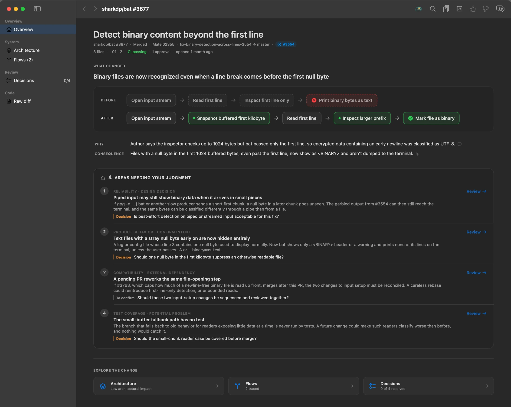

Contour
Understand the change.
Not just the diff.
Code review was designed for a world where humans wrote the code.
That world changed.
pub(crate) fn try_new<R: BufRead + 'a>(mut reader: R) -> io::Result<InputReader<'a>> {
+ let mut inspection_prefix = {
+ let buffered = reader.fill_buf()?;
+ buffered[..buffered.len().min(CONTENT_INSPECTION_LIMIT)].to_vec()
+ };
let mut first_line = vec![];
- reader.read_until(b'\n', &mut first_line)?;
+ if !inspection_prefix.is_empty() {
+ reader.read_until(b'\n', &mut first_line)?;
+ }
- let content_type = inspect_content_type(&first_line);
+ let content_type = inspect_content_type(&inspection_prefix);What changed
Binary files are now recognized even when a line break comes before the first null byte.
What you need to decide
Should detection wait for more stream data?
We still review AI‑written code like it’s 2015.
What the tools put in front of you
- Files changed47
- Lines added+2,318
- Lines removed−406
- Commentson line 1,142
Built for a world where a colleague typed every one of those lines, and reading them was how you understood their thinking.
What you actually need to know
- What behavior changed?
- How does it fit into the system?
- What decisions did the agent make?
- What did we trade off?
- Where does human judgment actually matter?
When an agent writes a thousand lines in an afternoon, reading every one of them isn’t diligence. It’s the wrong job.
01 Start with the big picture
Know what the system does differently before reading how it does it.
Contour opens several levels above the code. Before a single hunk, you see the behavior the pull request changes.
Before
- Open input stream
- Read first line
- Inspect first line only
- Print binary bytes as text
After
- Open input stream
- Snapshot buffered first kilobyte
- Read first line
- Inspect larger prefix
- Mark file as binary

02 The philosophical centerpiece
Review decisions,
not keystrokes.
Decision · src/input.rs
Should detection wait for more stream data?
- What we're trading
-
detection completeness streaming responsiveness
- Why this side?
- A non-consuming
fill_bufsnapshot loses no bytes and adds no blocking read. Author rationale - What it costs
- On a pipe, a NUL that arrives after the first short read is still missed. Interpretation · medium confidence
Your call. Contour records it; it never makes it.
Contour finds the consequential choices embodied in the implementation: what was chosen, what it was chosen over, and what it trades away.
Then it asks the only question that matters.
Do you agree?
It doesn’t grade the choice. It doesn’t approve the PR. It lays the decision out so a human can own it.
03 Human judgment is scarce
Spend human attention where it matters.
Every PR is full of choices. Most are implementation detail. Contour keeps the ones that look consequential to
- correctness
- architecture
- security
- performance
- reliability
- compatibility
- user behavior
and hands you those.
4 choices identified 2 worth your judgment
- systemHow much data should binary detection inspect?
- systemShould detection wait for more stream data?
- detailWhich sample wins when the first line exceeds the buffer?
- detailShould empty input trigger a second read attempt?
The two set aside are still one click away, and you can promote either.
The AI filters attention. The human retains judgment.
04 Flows
“Show me what happens when…”
gpg -d notes.gpg | bat- bat opens stdin
- Snapshot what's already buffered, up to 1 KB new
- Read the first line without losing the snapshot changed
first read ≥ 1 KB
NUL found in the prefix → <BINARY>
first read is short
NUL arrives in a later chunk → printed as text
Review question: is best-effort detection on piped or streamed input acceptable for this fix?
Flows explain runtime behavior as a story, not as a translated call stack.
05 Architecture
See where the change sits.
Architectural impact · low No structural change: binary sniffing now looks at a larger sample.
Contour doesn’t confuse “components changed” with “architecture changed.”
Three files touched, no new relationships. One existing edge now carries a different payload, and that edge is what gets highlighted.
06 Evidence
Big picture first. Evidence always available.
- DecisionUse what's buffered
- Tradeoffcompleteness ↔ responsiveness
- Flowbat (stdin)
- ArchitectureInput Reading → Content Inspection
- ImplementationInputReader::try_new
- Code
src/input.rs:272–275
267 pub(crate) fn try_new<R: BufRead + 'a>(mut reader: R) -> io::Result<InputReader<'a>> {
268 // content_inspector scans at most 1024 bytes. Capture the already-buffered
269 // prefix before splitting out the first line so an early newline in binary
270 // data does not shorten the inspected content. This does not consume input
271 // or perform an additional read beyond the one read_until needs anyway.
272 let mut inspection_prefix = {
273 let buffered = reader.fill_buf()?;
274 buffered[..buffered.len().min(CONTENT_INSPECTION_LIMIT)].to_vec()
275 };Every explanation leads back to the code that supports it. The difference is that you read those lines because you know why they matter.
07 Talk to the change
When something doesn’t make sense, ask it.
You
Why not just keep reading until we have the full 1 KB?
Contour
Because reading ahead blocks on a pipe. With tail -f log | bat, bat would print nothing until 1 KB arrived or the stream closed. The PR copies whatever fill_buf already holds instead, so it never adds a read, at the cost of missing a NUL that arrives in a later chunk.
You shouldn’t have to explain to the AI what you’re looking at. Right-click anything and the conversation starts already knowing
- the PR
- the architecture element
- the decision
- the related flows
- the implementation
- the evidence
08 Progressive understanding
Zoom in when you need to.
Start with the shape of the change. Descend into implementation only where your judgment or curiosity takes you.
- System
- Behavior
- Decisions
- Implementation
- Code
The answer to AI-generated code isn’t more humans pretending to be linters.
Machines are good at
- tracing code
- synthesizing context
- finding relationships
- explaining implementation
- surfacing possible consequences
Humans are still for
- intent
- judgment
- architecture
- tradeoffs
- risk acceptance
- deciding whether the system should work this way
Let machines explain what changed.
Let humans decide whether it should have changed that way.
Try Contour
A native SwiftUI app for macOS 15+, installed with Homebrew or built from source. It drives an AI CLI you’re already signed in to (Claude Code or pi) and needs nothing else but git. Public PRs don’t even need gh.
Homebrew builds the latest main from source, so it needs Xcode 27. brew upgrade --fetch-HEAD contour pulls newer commits. Early and experimental; expect rough edges.
# the repo is its own tap
brew tap j-s-3/contour https://github.com/j-s-3/contour
brew install --HEAD j-s-3/contour/contour
contour
# or build it yourself
git clone https://github.com/j-s-3/contour
cd contour && swift run Contour